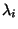
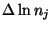
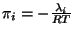

In order to solve for corrections to initial estimate of composition
, Lagrangian multiplier , moles n, and temperature T,
we will use a descent Newton-Raphson method. This method involves a Taylor
series expansion of the equation and use the terms of the first
order. The correction variables are
 for the gases,
for the condensed species,
,
 the dimensionless Lagrangian multipliers and
 .
.
| (13) |
| (15) |
| (16) |